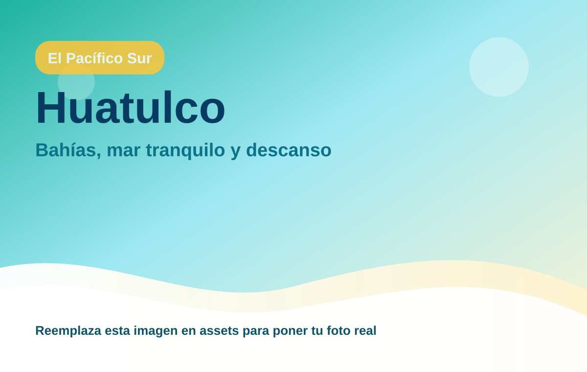
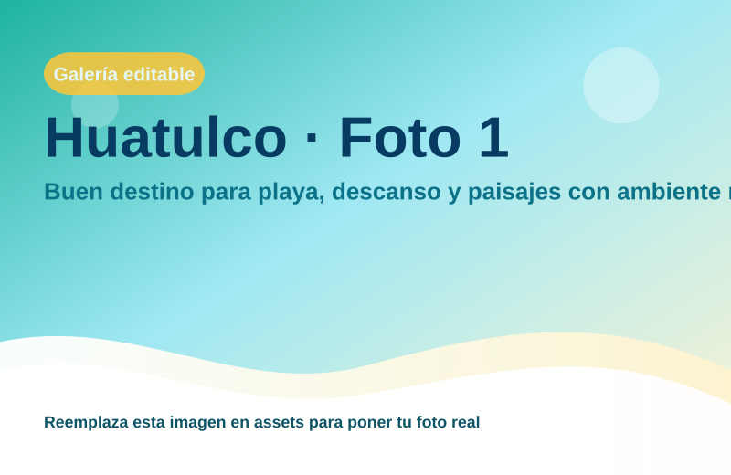
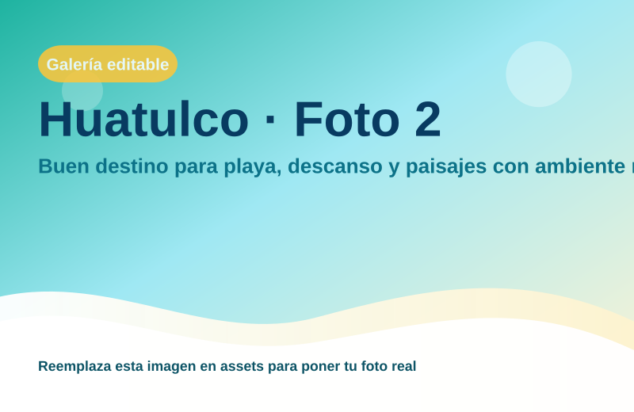
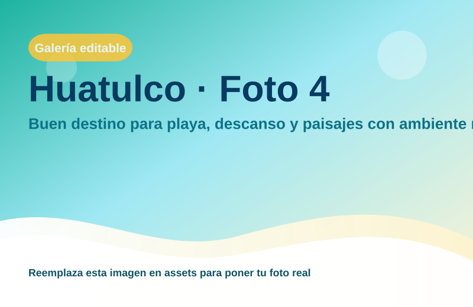

Huatulco
Buen destino para playa, descanso y paisajes con ambiente relajado.

Bahías hermosas y hoteles frente al mar
Región: El Pacífico Sur
Ideal para: Bahías, mar tranquilo y descanso
Usa esta ficha como base rápida. Puedes imprimirla en PDF desde el navegador o compartir el enlace.


